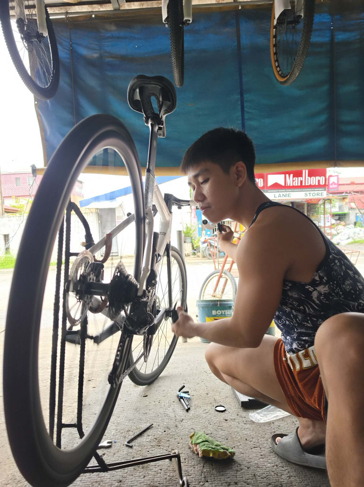

BIKE SHOP SERVICES
Whether it's time for a routine tune-up, bike assembly, or a complete overhaul, our service department at Taurus Bike Shop is here to keep your bike performing at its absolute best. Walk-in customers are always welcome!
Trained Technicians
Shimano & professional certified mechanics
Walk-In Service Only
No appointment needed, drop by anytime
Free 15-Point Check
Complimentary stand safety check
Mon - Sat: 8AM - 6PM
Sandico St., Abangan Sur, Marilao

EXPERIENCED, TRAINED EXPERTS
Our skilled mechanics have the expertise to service and repair all types of bicycles. Whether you ride a mountain bike, road bike, gravel, or daily commuter, we provide reliable maintenance and tune-ups. Not sure what your bike needs? Bring it to our shop in Marilao for a free inspection, and our experts will recommend the right service for you.
FAST TURNAROUND
Our quick turn around time will get you back out there in no time.
Bike Tunes
Standard labor rates for Taurus Bike Shop walk-in service.
BIKE ASSEMBLE ₱650
Complete Bike Build & Setup
Unboxing or bare frame assembly, groupset mounting, and precision alignment for new bikes.
- Complete Bare Frame / Box Assembly
- Headset & Bottom Bracket Installation
- Crankset, Cassette & Chain Sizing / Mounting
- Front & Rear Derailleur Cable Routing & Indexing
- Brake System Caliper / Disc Alignment & Pad Centering
- Cockpit Ergonomics & Torque Specification Check
- 15-Point Pre-Ride Stand Inspection & Road Test
Estimated Labor Time: 2 to 3 Hours
Applicable to: Boxed bikes, online purchases, or custom builds.
Note: Walk-in drop-off available anytime during store hours.
OVERHAUL ₱450
Deep Clean & Bearing Overhaul
Our comprehensive mechanical refresh to restore peak pedaling smoothness and extend component life.
- Full Drivetrain Ultrasonic Degreasing & Bath
- Bottom Bracket Teardown, Clean & Fresh Marine Grease
- Headset Bearing Inspection, Degrease & Repack
- Front & Rear Hub Bearing Inspection & Lubrication
- Derailleur Hanger Alignment & Precision Shifting Tune
- Brake Alignment, Rotor Degrease & Pad Resurfacing
- Frame Wash, Wipe-Down & Protective Glaze
- Master Mechanic Safety Test Ride
Turnaround: Same-day or 24 Hours depending on shop bay queue.
Recommended: Every 6 months or 1,500 km of road/trail riding.
Includes: High-grade waterproof grease on all bearing assemblies.
BIKE ALIGNMENT ₱100
Precision Truing & Centering
Eliminate wheel wobble, pad rubbing, and misaligned hangers for crisp steering and braking.
- Precision Wheel Lateral Truing on Stand
- Derailleur Hanger Alignment Gauge Check
- Disc Brake Caliper & Rotor Gap Centering (No Rubbing)
- Fork Steerer & Handlebar Stem Centerline Alignment
- Spoke Tension Inspection & Loose Nipple Torquing
- Quick Wheel Dropout & Axle Seating Check
Estimated Labor Time: ~15 - 25 Minutes (Express Service).
Recommended: Immediately after minor crashes, rim bumps, or brake rub.
What's Going On With Your Bike?
Click the symptom your bike is experiencing to get an instant diagnosis and walk-in labor rate.
Select a symptom above to get diagnosis
Click any of the bike issues above to discover what maintenance or repair is required.
Individual Services & Repairs
Transparent labor pricing for specific repairs. Walk-ins are accommodated at our Marilao shop.
Bike Alignment (Wheel & Hanger)
Precision lateral wheel truing on stand, derailleur hanger straightening, and brake caliper centering.
Bike Assemble (Complete Build)
Full unboxing, fork & headset install, groupset mounting, brake setup, and 15-point safety inspection.
Complete Bike Overhaul
Ultrasonic drivetrain clean, bottom bracket & headset bearing repack with marine grease, and safety tune.
Chain Replacement & Sizing
Inspection of chain wear, precise link sizing, quick-link installation, and lubrication.
Derailleur Indexing & Adjustment
Front or rear derailleur limit screw calibration, cable tension fine-tuning, and crisp gear shifts.
Hydraulic Brake Bleed (Per Brake)
Purge air bubbles and refill with fresh mineral oil or DOT fluid for firm lever response.
Brake Pad Replacement & Rotor Clean
Installation of fresh disc or rim pads, isopropyl alcohol rotor degrease, and alignment.
Inner Tube Replacement / Flat Fix
Tire inspection for thorns/glass, tube swap, rim tape inspection, and inflation to optimal PSI.
Tubeless Tire Setup (Per Wheel)
Tubeless rim taping, valve stem installation, tire bead blast seating, and fresh sealant injection.
Visit Our Marilao Workshop
Sandico Street, Abangan Sur, Marilao, Bulacan, Philippines